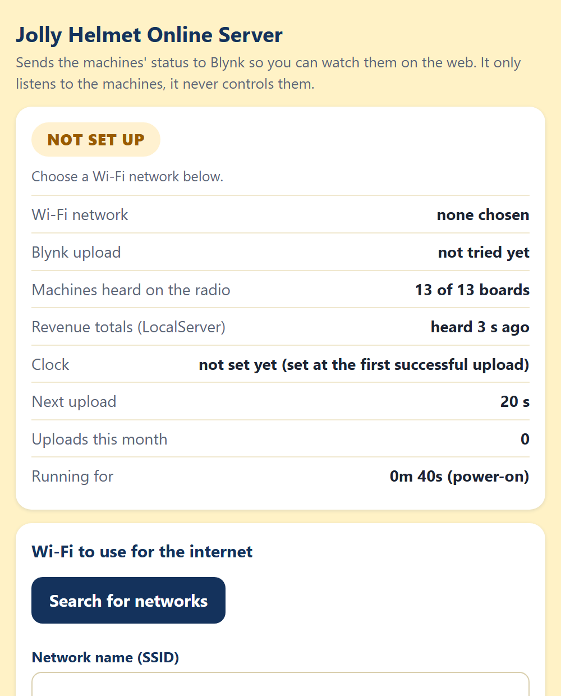
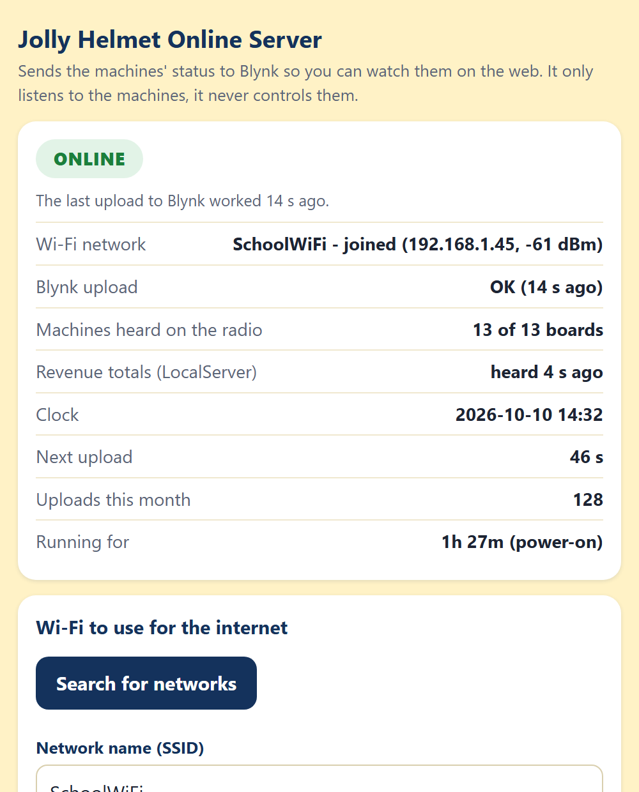
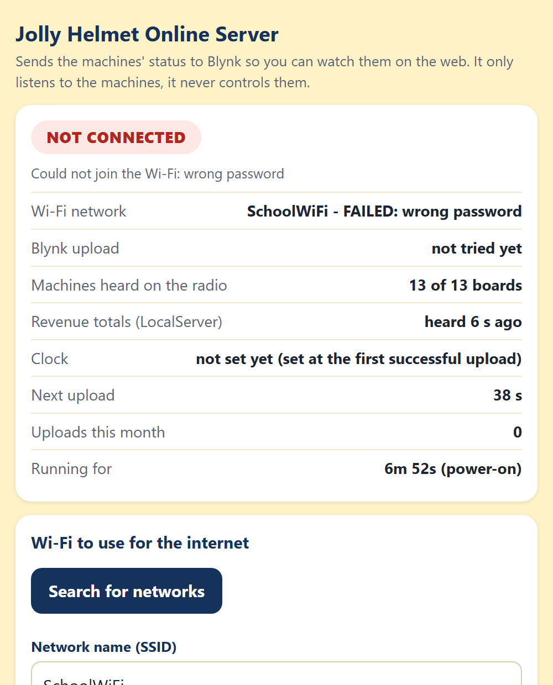
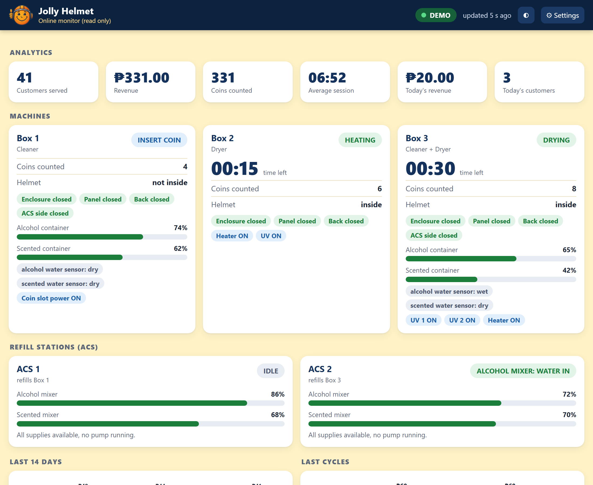
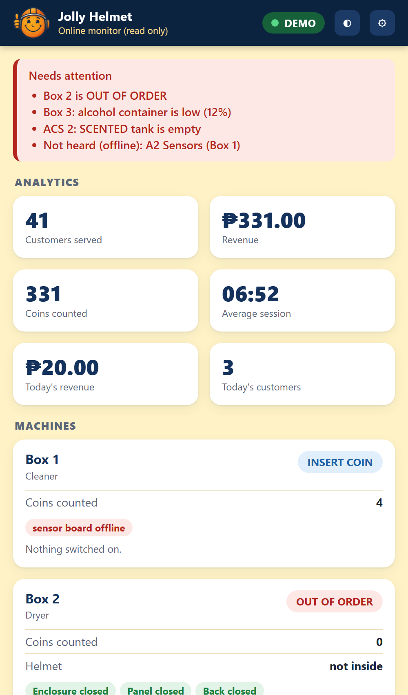

MEJES, JERAHMEEL ALZEL M. CRUZ, DEAN RYAN P. MENDOZA, RICAH S. MARTOS, KRISTINA E.
DEVELOPERS AND DESIGNERS
USER MANUAL
Clean it. Dry it. Wear it happy.
Coin-operated helmet cleaning and drying stations
USER MANUAL
Jolly HelmetMake your Helmet Happy Again!
Table of contents
FOR CUSTOMERS
Meet the machines3
Before you start4
Box 1 - Cleaner5
Box 2 - Dryer11
Box 3 - Cleaner + Dryer13
Prices and time15
Special screens and safety16
FOR ADMINS (Control Center)
Connecting and Home page21
Box settings (rules, levels, phases)23
Screen refresh and maintenance27
Refill station (ACS)29
Troubleshooting and care33
FOR TECHNICIANS (Hardware and online)
How it is built
Component list
Pinouts
Circuit and wiring
Firmware and flashing
Online monitoring (Blynk and web)
Maintenance
Hardware troubleshooting
USER MANUAL
i
Jolly HelmetMake your Helmet Happy Again!
Welcome to Jolly Helmet!
A self-service station that cleans and dries your motorcycle helmet while you wait.
REFERENCE (Charts, safety, settings, index)
Safety and emergencies
Box flowcharts
Troubleshooting decision trees
Settings reference
Circuit schematics
Policies
Glossary
Version and revisions
Index
USER MANUAL
ii
Jolly HelmetMake your Helmet Happy Again!
Meet the machines
There are three Jolly Helmet stations. Each one has a touch screen, a coin slot and a door. Pick the one that fits what your helmet needs.
Station
What it does
Box 1 Cleaner
Removes odor. UV light plus a fine mist of alcohol, scented liquid, or both.
Box 2 Dryer
Dries a wet helmet with warm air, then cools it down before you take it out.
Box 3 Cleaner + Dryer
One station, two modes. Choose CLEANING or DRYING on the first screen.
Tip / Paalala: Pwede mong gamitin ang Box 1 at Box 2 nang magkasunod: linis muna, tapos tuyo.
USER MANUAL
3
Jolly HelmetMake your Helmet Happy Again!
Before you start
You need: your helmet and coins. The machine counts coins by value: a one-peso coin counts as 1.
How the touch screen works
Rating grid: tap a box 1-10, then CONFIRM
Number pad: type the minutes and seconds, then OK
Big words (yellow) tell you what to do next: OPEN, PLACE, CLOSE, TAKE.
Buttons are the dark boxes with white words. Tap them once.
The screen blinks briefly now and then. This is normal, it refreshes itself.
Never put your hand in while the machine runs. If you open the door, the machine pauses by itself.
USER MANUAL
4
Jolly HelmetMake your Helmet Happy Again!
Box 1 - Cleaner
1. Tap anywhere to START
2. Welcome
Wake the machine. Tap anywhere on the screen. For a moment it says "Please Wait" while it checks its alcohol and scented liquid.
Tap to START on the welcome screen.
If the screen says OUT OF ORDER, the station needs refilling or service. Please tell the staff.
USER MANUAL
5
Jolly HelmetMake your Helmet Happy Again!
Rate it and choose the mist
3. ODOR O' METER
4. CLEANING MODE
Rate the smell. Tap 1 (MINT, fresh) to 10 (STINKY), then CONFIRM. The worse the smell, the more time we suggest.
Choose the mist.BALANCED uses both liquids, MORE ALCOHOL is stronger against germs, MORE SCENTED leaves a fresher scent.
USER MANUAL
6
Jolly HelmetMake your Helmet Happy Again!
Pick the time and pay
5. ALLOCATE CLEAN TIME
6. INSERT THE REQUIRED COIN
Allocate time. The pad shows the time we suggest for your rating. Type a different time if you like, then tap OK. The shortest time and the longest time are shown if you go outside them.
Insert the coins. The screen counts up: coins inserted / coins required. When it is enough, the machine moves on by itself.
Extra coins beyond the price give no extra time and are not refunded. Tap CANCEL before paying if you change your mind.
USER MANUAL
7
Jolly HelmetMake your Helmet Happy Again!
Load your helmet
7. OPEN
8. PLACE
9. CLOSE
OPEN the door when the screen asks.
PLACE your helmet inside, opening facing the front, then step back.
CLOSE the door. The machine checks that the door is shut and the helmet is inside, then starts.
If you see HELMET NO DETECTED, the machine did not see your helmet. Open the door and place it again.
USER MANUAL
8
Jolly HelmetMake your Helmet Happy Again!
While it cleans
10. Cleaning... time left
CANCEL asks first
The big green number is the time left. The bar fills as it goes.
The small grey line shows what is on: the mist, the UV light.
To stop early tap CANCEL, then CONFIRM. Coins are not refunded.RESUME keeps cleaning.
If the door is opened during a run, everything pauses (SAFETY PAUSE). Close the door and it continues where it stopped.
USER MANUAL
9
Jolly HelmetMake your Helmet Happy Again!
All done
11. TAKE your helmet
13. FREE TIME?
OPEN the door and TAKE your helmet. Close the door again.
Rate it again on the same 1-10 grid, then CONFIRM.
Free retry. Not happy yet? The machine may offer a short FREE TIME (2 minutes). Tap YES to run once more, or NO. It is offered once per visit.
The screen thanks you and returns to the start.
USER MANUAL
10
Jolly HelmetMake your Helmet Happy Again!
Box 2 - Dryer
DRY O' METER
ALLOCATE HEATING TIME
Tap anywhere, then Tap to START (same as Box 1).
Rate how wet it is: 1 = DRY ... 10 = WET, then CONFIRM.
Allocate heating time on the number pad, then OK.
Insert the coins shown on the screen.
OPEN, PLACE, CLOSE the door, same as Box 1.
USER MANUAL
11
Jolly HelmetMake your Helmet Happy Again!
Heating and cooling
6. Heating...
7. Cooling Down...
Heating. Warm air dries the helmet and UV light freshens it. You can CANCEL, but coins are not refunded.
Cooling down. A fan runs alone so the helmet is not hot to wear. The door stays locked until it ends.
OPEN the door, TAKE your helmet, CLOSE the door.
Rate it again, then use the free retry if you want one.
If you cancel while heating, the machine still cools the helmet down first, for your safety.
USER MANUAL
12
Jolly HelmetMake your Helmet Happy Again!
Box 3 - Cleaner + Dryer
SELECT MODE
CLEANING unavailable
Tap anywhere, then Tap to START.
SELECT MODE. Tap CLEANING or DRYING.
If CLEANING is grey and says UNAVAILABLE, the cleaning liquids are being refilled or are low. DRYING still works.
CLEANING mode
Same steps as Box 1: rate the odor, choose the mist, pick the time, pay, load the helmet. At the end you rate two things: how dry it is, then how it smells. The heater runs only in the last minute, together with the UV light.
USER MANUAL
13
Jolly HelmetMake your Helmet Happy Again!
DRYING mode
Drying...
Cooling Down...
Rate how wet the helmet is (DRY O' METER), then CONFIRM.
Allocate drying time on the number pad.
Pay, then OPEN, PLACE, CLOSE.
Drying uses warm air and UV light. After it, the machine cools down for about a minute with nothing running.
OPEN, TAKE, CLOSE, rate again and use the free retry if offered. A free retry after cleaning is another cleaning; after drying it is another drying.
USER MANUAL
14
Jolly HelmetMake your Helmet Happy Again!
Prices and time
Box 1 and Box 3 (cleaning): 15 coins = 5 minutes.
Rating
Suggested time
Coins
1 - 5
5 minutes
15
6 - 7
10 minutes
30
8 - 9
15 minutes
45
10
20 minutes
60
Longest session: 30 minutes (90 coins).
Box 2 (drying): 10 coins = 3 minutes.
Rating
Suggested time
Coins (about)
1 - 3
3 minutes
10
4 - 6
5 minutes
17
7 - 8
8 minutes
27
9 - 10
10 minutes
34
These are the starting prices. The admin can change them, so always check the INSERT THE REQUIRED COIN screen for the exact amount.
USER MANUAL
15
Jolly HelmetMake your Helmet Happy Again!
Special screens
Door opened during a run
Station needs service
You see
What it means / what to do
SAFETY PAUSE
The door was opened. Close it and the run continues.
HELMET NO DETECTED
No helmet seen. Open the door and place it again.
OUT OF ORDER
The station cannot work now. Use another station and tell the staff.
CLEANING UNAVAILABLE
Cleaning liquids are low. Use DRYING or come back later.
MAINTENANCE
A technician is working on the station.
USER MANUAL
16
Jolly HelmetMake your Helmet Happy Again!
Safety first
Helmets only. Do not put bags, gloves, liquids or anything else inside.
Keep your hands out while the machine runs. Hot air and UV light are used.
UV light is strong. Never look into the chamber while it is on. The door must be closed.
Do not force the door. It is locked on purpose while the machine runs. To stop, use CANCEL on the screen.
Remove your helmet's accessories (camera, speaker, visor tint film) if they are not heat-safe.
Children should use the machine with an adult.
In an emergency, tap CANCEL, then CONFIRM. The machine stops and the door unlocks (on the dryers after a short cool-down).
If your helmet is stuck after a power cut or a fault, do not pull on the door. Tell the staff. The doors stay locked without power, and the staff can release the lock from the Control Center when power is back.
USER MANUAL
17
Jolly HelmetMake your Helmet Happy Again!
Questions
Question
Answer
The screen went white.
Wait a moment, it restarts itself. If it stays white, tell the staff.
I inserted a coin but nothing changed.
Insert the coin again slowly. Tell the staff if the count does not move.
Can I get a refund?
Coins are not refunded after the run has started or been cancelled.
The time is too long / too short.
On the number pad, type the time you want before tapping OK.
Why was I offered a free retry?
Because the helmet may need one more round. It is offered once per visit.
Which station should I use?
Smelly: Box 1 or Box 3 CLEANING. Wet: Box 2 or Box 3 DRYING.
USER MANUAL
18
Jolly HelmetMake your Helmet Happy Again!
ADMIN USER MANUAL
The Control Center: settings, calibration and maintenance
WEB PANEL FOR ADMINS AND TECHNICIANS
USER MANUAL
19
Jolly HelmetMake your Helmet Happy Again!
For admins and technicians
USER MANUAL
20
Jolly HelmetMake your Helmet Happy Again!
Connecting
The Control Center is a small web server (the LocalServer) inside the machine. You connect to it with a phone or laptop. It does not need internet.
Switch on the machine and wait about 30 seconds.
On your phone, join the Wi-Fi JollyHelmet-Local, password 12345678.
Open a browser and go to http://192.168.4.1 (the page often opens by itself).
The Home page appears. Use the menu button (three lines, top left) to open the settings pages.
The machines keep running and keep every setting even when the LocalServer is off or being replaced. It only shows, and sends your changes.
The Wi-Fi password is printed here for admins. Change it in the LocalServer program if this manual is shared outside the team.
USER MANUAL
21
Jolly HelmetMake your Helmet Happy Again!
Home page
Alert banner (red): empty supplies, low mixers, a station out of order.
Configure and calibrate: big buttons to Box 1, Box 2, Box 3 and ACS.
The three boxes: current step, coins counted, time left, plus settings and refresh screen links.
Refill systems: ACS status, mixer levels, empty or running pumps.
Statistics: users served, revenue, average time, coins, last 10 cycles.
Menu list: online/offline badge for every board.
USER MANUAL
22
Jolly HelmetMake your Helmet Happy Again!
Rules and prices
How to use it (Box 1, Box 2 and Box 3 have the same section):
Open the box page, scroll to Rules.
Set the rating bands (which ratings suggest how many minutes), the shortest session, the most coins and the coin rate (N coins = X minutes).
Set the free retry (from which rating, for how many minutes).
Tap Send RULES. A green tick means the box has saved them.
USER MANUAL
23
Jolly HelmetMake your Helmet Happy Again!
Containers and sensors
Check the container levels: keep OFF until the numbers are measured.
Low / High at: fill to the line, tap use live. Bigger number = emptier.
Helmet inside under: put a helmet in, tap use live, raise it a little.
Water sensors:dry now, then wet now in the real liquid (alcohol conducts poorly).
Refill tries: tick send the request to the ACS only when the ACS works. Then tap Send LEVELS.
USER MANUAL
24
Jolly HelmetMake your Helmet Happy Again!
Cleaning phases
A cleaning is cut into a START part, a MIDDLE part and an END part. Tick when each relay is on.
Example: UV on in Start and End, mist in the Middle.
Always on = tick Start, Middle and End.
Box 3: keep the HEATER in the End part only, never with a humidifier. The page warns you if they overlap.
Paid cleaning and the free retry have their own tables.
Tap Send PHASES.
USER MANUAL
25
Jolly HelmetMake your Helmet Happy Again!
Heating and drying
Box 2 - Heating: set the helmet distance (put a helmet in, use live) and the cool-down seconds (default 60, 5 to 900). Tap Send HEAT.
Box 3 - Drying: set the cool-down seconds, then Send DRYING. The drying time itself comes from the customer's choice and the Rules.
Good to know
Every setting is saved inside the box's own board, so it survives a power cut or a LocalServer replacement.
If a number is outside its allowed range, the box refuses it. The green tick will not appear.
Use Reload beside a Send button to bring back what the box really has.
Change one thing at a time and test it with a short session before leaving it.
USER MANUAL
26
Jolly HelmetMake your Helmet Happy Again!
Screen (touch display)
A heavy load switching on can make the touch screen go white. Three tools cure it:
Force refresh the screen: restarts it now.
Auto hard refresh every N seconds: restarts it by itself (0 = never, 60 = max). Rating and number-pad screens are skipped.
Refresh when a relay switches: tick the relays (ON and/or OFF) that should trigger it. The lock is normally ticked OFF.
USER MANUAL
27
Jolly HelmetMake your Helmet Happy Again!
Maintenance mode
Make sure the station is on its start screen (TAPS) or OUT OF ORDER.
Tap Maintenance. The machine shows MAINTENANCE.
Tap a relay button to switch it on or off by hand. Green = on.
Tap Maintenance again. Everything switches off.
The hand-set heater turns itself off after 5 minutes and the lock after 60 seconds. Keep the door shut and clear when testing the heater.
USER MANUAL
28
Jolly HelmetMake your Helmet Happy Again!
Refill station (ACS)
ACS 1 refills Box 1, ACS 2 refills Box 3. Each has three supply tanks (water, alcohol, scented), two mixer containers, and six pumps. Choose the ACS at the top of the page.
When a mixer drops to its refill from line, the ACS adds water first, then the alcohol (or scented liquid) up to FULL.
When a box asks, the matching mixer pump sends one short shot to the box.
USER MANUAL
29
Jolly HelmetMake your Helmet Happy Again!
Setting up the ACS
Mixer container lines: fill each mixer to the line and tap use live for refill from, LOW, FULL and empty. Smaller number = fuller. Tap Send LEVELS.
Mix: the water share of each top-up (30% water = 70/30 alcohol). Tap Send MIX.
Timing / water-level sensors: use dry now / wet now for each sensor and Work out the thresholds. Tap Send TIMING.
Check the pumps one at a time in Maintenance before the first automatic run.
Use plain water in all three supply tanks for the first test.
USER MANUAL
30
Jolly HelmetMake your Helmet Happy Again!
Reading the ACS
You see
It means
IDLE
Nothing to do. Mixers are above the refill line.
ALC WATER IN ALC ALCOHOL IN
Filling the alcohol mixer: water, then alcohol.
SCT WATER IN SCT SCENTED IN
Filling the scented mixer.
DELIVER ...
Sending one shot to the box.
WATER / ALCOHOL / SCENTED EMPTY
That supply tank is empty (or its pump is dead). The pump stopped and it retries in 5 minutes.
Half-made mix
A recipe was interrupted. The mixer is not delivered until it is finished.
USER MANUAL
31
Jolly HelmetMake your Helmet Happy Again!
Try it and fix it
Ask: alcohol / scented pretends to be the box and makes one delivery shot. Stop cancels it.
Retry now forgets an EMPTY verdict after you refilled a tank.
Mixers are fine as they are clears the half-made flag when the mixers really hold good mix.
Maintenance: run each of the six pumps by hand, one at a time. Each pump stops itself after 60 seconds.
Refilling a supply tank
The three supply tanks have no sensors: look at them during your daily check.
Refill the tank that is low or reported EMPTY.
Tap Retry now.
Never run a pump dry. If liquid does not move when a pump runs, check the tube and the relay wiring first.
USER MANUAL
32
Jolly HelmetMake your Helmet Happy Again!
Troubleshooting
Problem
What to do
Screen white or garbled
Box page, Force refresh the screen. If it returns, tick the relay that causes it or lower the auto-refresh time.
A board shows OFFLINE
Check its power and wiring, then watch its badge on Home.
Station shows OUT OF ORDER
One board is silent (sensor or relay board). See the offline badges.
CLEANING is UNAVAILABLE
Containers are low. Check the ACS; refill, then Retry now.
Coins not counted
Use the coin check on the box page: pulses should rise by the coin's value.
Touch is off or upside down
The terminal needs its touch calibration or rotation checked.
Home says last restart BROWNOUT
Power dipped. Use a stronger supply and a short cable.
USER MANUAL
33
Jolly HelmetMake your Helmet Happy Again!
Care and spare parts
Daily check
Home page: every badge ONLINE, no red banner.
Look at the three ACS supply tanks (they have no sensors).
Check the revenue and the number of users.
When a board breaks
Keep one spare ESP32 per role, flashed and labelled (A1, S3B, ACS 2...).
Swap it in and wire it exactly like the old one.
Watch its badge turn ONLINE on Home, then re-enter that box's settings if they were lost.
After rewiring, test each relay or pump by hand in Maintenance first.
S3A, S3B, S3C and the LocalServer are ESP32-S3 boards (16 MB, OPI PSRAM). The relay boards A3 and B3 must be plain ESP32 boards.
USER MANUAL
34
Jolly HelmetMake your Helmet Happy Again!
TECHNICIAN GUIDE
Hardware, wiring, online monitoring and maintenance
USER MANUAL
35
Jolly HelmetMake your Helmet Happy Again!
For technicians and builders
USER MANUAL
36
How it is built
Each machine is a small team of ESP32 boards that talk by radio (ESP-NOW, channel 1). The only wires between the boards are power wires.
The whole installation: three boxes, two refill stations, the LocalServer and the Online Server
The 15 boards
Board
Where
What it does (sketch folder)
S3A
Box 1
Brain. Runs every step and keeps the settings. (ESP32_S3A)
A1
Box 1
Touch screen, coin slot, buzzer. (ESP32_A1)
A2
Box 1
Sensors: 4 doors, helmet, 2 containers, 2 water sensors. (ESP32_A2)
3 door sensors, helmet sensor and 6 relays: 3 locks, heater, UV, fan. (ESP32_C2)
S3B
Box 3
Brain. (ESP32_S3B)
B1
Box 3
Touch screen, coin slot, buzzer. (ESP32_B1)
B2
Box 3
Sensors, same as A2. (ESP32_B2)
B3
Box 3
13 relays: same as A3 plus the heater. (ESP32_B3)
ACS 1
Box 1 refill
6 pumps, 2 mixer containers (ultrasonic and water sensor each). (ESP32_ACS1)
ACS 2
Box 3 refill
Same as ACS 1. (ESP32_ACS2)
LocalServer
Control Center
Wi-Fi JollyHelmet-Local, settings pages, revenue. Also broadcasts its revenue totals for the Online Server. (ESP32_LOCALSRV)
Online Server
Online
Listens to the machines and sends a snapshot to Blynk for the web page. Never controls anything. (ESP32_ONLINESRV)
Brains and terminals
Brains (S3A, S3B, S3C, LocalServer, Online Server) are ESP32-S3 boards with 16 MB flash and 8 MB PSRAM. Nothing is wired to them except power.
Terminals (the A, B, C and ACS boards) are plain ESP32 (WROOM) boards on screw-terminal expansion boards. They hold every sensor, relay and display wire. A3 and B3 must not be WROVER (PSRAM) boards, because GPIO 16 and 17 are relays.
Settings are saved inside the brains (S3A, S3B, S3C) and the ACS boards. The LocalServer only saves the revenue numbers. The Online Server saves its own Wi-Fi, Blynk token and the daily revenue history.
If a terminal hears nothing from its brain for 15 seconds, it switches its relays off (heater, UV, mist, pumps, coin power). If a helmet is stuck behind a closed door, it also lets the enclosure lock go.
Component list
Quantities are for the whole installation: Box 1, Box 2, Box 3, ACS 1 and ACS 2. A yellow confirm mark means: check this against your real part and edit it.
Boards and display
Item
Qty
Used in
ESP32 DevKit (ESP32-WROOM-32) with screw-terminal expansion board
DC-DC power module, 12 V in, 3.3 V and 5 V out (multi output)
5
All ESP32 boards, screens, relay boards, sensors, mist makers, pumps
Diode 1N4007
11 or more
One across every lock solenoid
Fuses, 220 V inlet or outlets, earth
-
Mains side: UV-C lamps and heaters
Not electrical: 2 main containers (alcohol, scented) in Box 1 and in Box 3. In each ACS: 3 supply tanks (water, alcohol, scented) and 2 mixer containers. Tubing and fittings.
What is in each unit
Item
Box 1
Box 2
Box 3
ACS 1
ACS 2
ESP32 terminal boards
3
2
3
1
1
ESP32-S3 brain
1
1
1
-
-
Touch screen, coin slot, buzzer
1
1
1
-
-
Door sensors
4
3
4
-
-
Ultrasonic sensors
3
1
3
2
2
Water-level sensors
2
-
2
2
2
Door locks
4
3
4
-
-
Humidifiers
3
-
3
-
-
Drain pumps
2
-
2
-
-
Refill pumps
-
-
-
6
6
UV-C lamps (220 V)
2
1
2
-
-
Heater
-
1
1
-
-
Fan
-
1
-
-
-
Pinouts
GPIO numbers are the ESP32 pin names (D4 = GPIO4). Every relay input is active-LOW: the pin goes LOW to switch the relay ON. These tables match the flashed firmware and the pin sheet RevisedJollyHelmet_Checked.xlsx.
Relay input numbers (IN1, IN2...) come from the Cirkit drawing. The GPIO is what the firmware drives. If a relay sits on a different input, trust the GPIO and fix the label.
S3A, S3B, S3C and LocalServer - nothing to wire
These four boards have no external wiring: power (5 V) and the USB cable for flashing only. GPIO 35, 36 and 37 are used inside the module by the OPI PSRAM: never connect anything to them.
A1, B1, C1 - screen, coin slot, buzzer
Identical wiring on all three boards:
GPIO
Signal
Wired to
15
TFT CS
Display CS
4
TFT RESET
Display RST
2
TFT DC
Display DC (RS)
13
MOSI (shared)
Display SDI (SDA) and touch T_DIN
14
SCK (shared)
Display SCK (SCL) and touch T_CLK
27
Touch CS
Touch T_CS
12
Touch MISO
Touch T_DO
23
Coin signal
Allan COIN, through a 10 kΩ resistor
21
Buzzer
Active buzzer +
5V
Display power
Display VCC and LED (BLK) confirm VCC rail
GND
Ground
Display, coin acceptor, buzzer -
Not connected: display SDO (MISO), touch T_IRQ, coin COUNTER.
Coin acceptor 12 V: from the COIN POWER relay on A3 and B3 (Box 1, Box 3). Straight from the 12 V supply in Box 2.
Free pins: 5, 16, 17, 18, 19, 22, 25, 26, 32, 33.
A2, B2 - sensors (Box 1, Box 3)
GPIO
Signal
Wired to
26
Helmet ultrasonic TRIG
Sensor TRIG
25
Helmet ultrasonic ECHO
Sensor ECHO
32
Alcohol container TRIG
Sensor TRIG
33
Alcohol container ECHO
Sensor ECHO
23
Scented container TRIG
Sensor TRIG
22
Scented container ECHO
Sensor ECHO
27
Enclosure door
MC-38 sensor S
14
Panel door
MC-38 sensor S
19
Back door
MC-38 sensor S
18
ACS side door
MC-38 sensor S
34
Alcohol water sensor
SIG (analog, input only)
35
Scented water sensor
SIG (analog, input only)
Ultrasonic VCC 5 V. Water sensors 3.3 V. Door sensors: the other wire goes to GND, the ESP32 supplies the pull-up (closed = LOW).
Free pins: 2, 4, 12, 13, 15, 16, 21.
A3 - Box 1 relays (16-channel board)
GPIO
Input
Load
Supply
4
IN1
Enclosure door lock
12 V
16
IN2
Panel door lock
12 V
17
IN3
Back door lock
12 V
23
IN4
ACS side-door lock
12 V
18
IN5
Humidifier 1 (alcohol)
5 V
19
IN6
Humidifier 2 (scented)
5 V
25
IN7
Humidifier 3 (both)
5 V
22
IN9
Coin power (the coin slot's 12 V)
12 V
27
IN10
UV-C lamp 1
220 V
21
IN11
UV-C lamp 2
220 V
33
IN12
Drain pump 1 (alcohol container)
5 V
32
IN13
Drain pump 2 (scented container)
5 V
Supply column: what each load runs on. The UV-C lamps are 220 V: the relay contact switches the live wire (see Switching 220 V loads). Locks and the coin slot are 12 V, humidifiers and drain pumps 5 V.
IN8 and IN14 to IN16 are not used. GPIO 2, 12 and 15 are left idle (boot pins).
B3 - Box 3 relays (16-channel board)
Pin for pin the same as A3, plus one more relay:
GPIO
Input
Load
Supply
26
IN14
Heater (hair dryer)
220 V via the relay contacts
C2 - Box 2 sensors and relays
GPIO
Signal
Wired to
26
Helmet ultrasonic TRIG
Sensor TRIG
25
Helmet ultrasonic ECHO
Sensor ECHO
27
Enclosure door
MC-38 sensor S
14
Panel door
MC-38 sensor S
19
Back door
MC-38 sensor S
Relays (6-channel module):
GPIO
Input
Load
Supply
4
IN1
Enclosure door lock
12 V
16
IN2
Panel door lock
12 V
17
IN3
Back door lock
12 V
18
IN4
Heater (hair dryer)
220 V
23
IN5
Fan
5 V
5
IN6
UV-C lamp
220 V
GPIO5 gives a short pulse when the board powers up, so the UV relay may click once. Recommended: when you next reflash C2, move the UV relay to a boot-safe pin (13, 21, 22, 32 or 33) so a 220 V UV-C lamp can never flash at power-up.
ACS 1 and ACS 2 - refill stations
Identical wiring on both. Relays (8-channel module with JD-VCC, 6 used):
GPIO
Input
Pump
Supply
18
IN1
Alcohol pump (tank to alcohol mixer)
5 V
19
IN2
Scented pump (tank to scented mixer)
5 V
21
IN3
Water pump for the alcohol mixer
5 V
23
IN4
Water pump for the scented mixer
5 V
22
IN5
Mixer alcohol pump (mixer to the box)
5 V
25
IN6
Mixer scented pump (mixer to the box)
5 V
Sensors:
GPIO
Signal
Wired to
4
Alcohol mixer ultrasonic TRIG
Sensor TRIG
14
Alcohol mixer ultrasonic ECHO
Sensor ECHO
26
Scented mixer ultrasonic TRIG
Sensor TRIG
33
Scented mixer ultrasonic ECHO
Sensor ECHO
34
Alcohol mixer water sensor
SIG (analog)
35
Scented mixer water sensor
SIG (analog)
The three supply tanks (water, alcohol, scented) have no sensors. The ACS detects an empty tank when the mixer level does not rise.
The pumps are 5 V. Check each pump by hand in Maintenance before the first automatic run (the relay inputs were mixed up once).
Circuit and wiring
Circuit summary
Every box and refill station is a group of ESP32 boards. They share only power and the radio channel.
Every lock, lamp, pump and heater is switched by a relay contact. Every sensor is read directly by a terminal board.
Voltages: 12 V (door locks, coin slots), 5 V (ESP32 boards, screens, relay boards, HC-SR04 ultrasonic sensors, humidifiers, pumps), 3.3 V (water-level sensors, from the ESP32 3V3 pin or the DC-DC module), 220 V (the UV-C lamps and the heaters).
Power and grounding
Measure every output of the DC-DC module (5 V and 3.3 V) with a meter before you connect boards. Never put 12 V on an ESP32 pin or on the 5 V rail.
Join all grounds: 12 V -, 5 V - and every ESP32 GND. Never join a 12 V + to a 5 V +.
A relay module has a JD-VCC jumper. Jumper on: the coils run from the module's VCC (one 5 V supply, shared ground). Jumper off: feed JD-VCC and its GND from a separate 5 V supply.
Locks, pumps and heaters starting can pull the 5 V down. Symptoms: white screen, LocalServer restarts, odd resets. Cures: short thick 5 V wires, a 470 to 1000 µF capacitor next to the TFT and the ESP32, a separate 5 V for the relay coils. The firmware also switches relays on 25 ms apart.
Put a fuse on every supply. Keep the 220 V wiring in its own enclosure, away from the boards.
Power for one box (the exact rails are listed in the component tables)
Relay outputs
One relay channel
Wire the load to COM and NO. Then it stays off when the relay or the board has no power. Leave unused channels unwired.
Relay pins avoid GPIO 0, 1, 2, 3, 5, 12, 14, 15 because they pulse at boot. Safe output pins: 4, 13, 16 to 19, 21 to 23, 25 to 27, 32, 33.
GPIO 34, 35, 36 and 39 are input only.
Switching 220 V loads (UV-C lamps and heaters)
The UV-C germicidal lamps and the heaters (hair dryers) run on 220 V. The relay contact switches only the live wire. The neutral goes straight from the supply to the load. The relay board's low-voltage side (IN pins, VCC) stays on the ESP32 side.
Use relay contacts rated for the load. Most relay boards are 10 A at 250 V AC. A hair dryer can draw 8 A or more (read its label). A UV-C lamp draws much less, but its ballast or driver can pull a high current at switch-on.
Fuse the 220 V feed of each box. Connect the earth wire to every metal part. Use insulated terminal blocks, strain relief on every cable, and keep 220 V wires away from the low-voltage boards and the screen.
Recommended: a door switch in series with the live wire of each UV-C lamp, so the lamp cannot be lit with a door open even if the firmware or a relay fails.
Never open a box with the 220 V connected. Unplug it first.
Door locks
A door lock with its flyback diode
The locks are power-to-unlock: the relay is ON only while the door may open (the OPEN steps, Maintenance, or the trapped-helmet release). With no power the lock stays locked. The 1N4007 takes the voltage spike when the relay lets go of the coil. Without it the spike can reset the board and burn the relay contacts.
After a power cut the doors stay locked. When power is back, release the enclosure lock from the Control Center: Box page, Maintenance, ENCLOSURE LOCK. It switches itself off after 60 seconds.
Coin slot and buzzer
Coin acceptor and buzzer on A1, B1 and C1
The Allan COIN output pulls to ground once per coin pulse. The pin is INPUT_PULLUP and the firmware counts falling edges, so the pin never sees more than 3.3 V. Check it once with a meter on every new unit.
FAST, MED, SLOW and SET are switches on the acceptor itself, not wires. COUNTER is not used.
The buzzer is the active type: GPIO21 HIGH = sound. If it sounds weak, or the board resets when it sounds, drive it through a transistor.
Sensors
Sensor
Wire
Goes to
Ultrasonic HC-SR04
VCC
5 V
TRIG
GPIO (output)
ECHO
GPIO (input), through a divider (the HC-SR04 gives 5 V)
GND
GND
Water-level
SIG
GPIO34 or GPIO35 (analog, input only)
VCC
3.3 V
GND
GND
MC-38 door
S
GPIO (INPUT_PULLUP). Magnet near = closed = LOW
GND
GND
The HC-SR04 sends 5 V on ECHO and the ESP32 pins are not 5 V tolerant. Put a divider on every ECHO: ECHO to 1 kΩ to the GPIO, and 2 kΩ from that GPIO to GND. (A 3.3 V module such as the HC-SR04P needs none.) The pin sheet shows no divider, so check that every sensor has one. confirm
Screen and touch
The display and the touch controller share the SPI lines MOSI (13) and SCK (14). Each has its own chip select (15 and 27). TFT_eSPI drives the display as an ST7789, 240 x 320. B1 is mounted upside down, so it runs setRotation(3).
Mains and UV safety
Mains can kill. The UV-C lamps and the heaters are on 220 V. Unplug the machine and wait before you open a box. Keep all 220 V wiring fused, earthed, in a closed enclosure with strain relief, away from the low-voltage boards.
UV-C light injures eyes and skin, even for a moment. Never look at a lit lamp and never test it with the door open. The firmware switches UV and mist off the moment a door opens, but firmware is not a safety device. Recommended: a door switch in series with the lamp's live wire, so the lamp cannot be on with a door open, and a warning label on every box.
Firmware and flashing
Arduino IDE settings
Board type
Settings
Terminals (A, B, C, ACS)
Board: ESP32 Dev Module. esp32 core 3.3.7. Upload speed 921600. Other options default.
Brains (S3A, S3B, S3C), LocalServer and Online Server
Board: ESP32S3 Dev Module. USB CDC On Boot: Enabled. CPU 240 MHz. Flash mode QIO 80 MHz. Flash size 16 MB. Partition: 16M Flash (3MB APP/9.9MB FATFS). PSRAM: OPI PSRAM. Upload speed 921600.
Libraries
TFT_eSPI 2.5.43: only A1, B1, C1 (edit its User_Setup.h, see below).
ArduinoJson 7.4.3, Async TCP 3.5.0, ESP Async WebServer 3.12.0: only the LocalServer and the Online Server.
Everything else (WiFi, ESP-NOW, Preferences) comes with the ESP32 core.
TFT_eSPI User_Setup.h
Setting
Value
Driver
ST7789_DRIVER (the only one not commented out)
TFT_WIDTH, TFT_HEIGHT
240, 320
TFT_MISO, TFT_MOSI, TFT_SCLK
12, 13, 14
TFT_CS, TFT_DC, TFT_RST
15, 2, 4
TOUCH_CS
27
SPI_FREQUENCY, SPI_TOUCH_FREQUENCY
20000000, 1000000
Flash a new or replacement board
Find the board in the table The 15 boards and open its sketch folder in the Arduino IDE.
The folder must hold the same Shared_Common.h as ESP32_S3A (the master copy). Different copies make boards ignore each other's messages.
Choose the settings above, plug in the USB cable and upload.
Open the Serial Monitor at 115200 baud to read the board's log.
Watch the board's badge turn ONLINE on the Control Center Home page.
For a brain (S3) or an ACS board, enter its settings again on its Control Center page. A new board starts with the default values.
Never run a bench or settings sketch (ESP32_S3A_CONFIG_BENCH, ESP32_S3C_CONFIG_BENCH, ESP32_ACS_CONFIG_BENCH, ESP32_A1_WIDGET_TEST) at the same time as the LocalServer or the real brain. They send the same messages and fight over them.
Test sketches
Sketch
Use
ESP32_A3_BENCH_TEST
Tests A3 alone: it pretends to be S3A and A2.
ESP32_B3_RELAY_TEST
Wi-Fi page (BOX 3 B3 TEST, password 12345678) to switch each B3 relay by hand.
ESP32_BUZZER_ULTRASOUND_TEST
Wi-Fi page to test a buzzer and read an ultrasonic sensor.
ESP32_C1_CALIBRATE
Touch calibration: touch the 4 targets, copy the printed calData line into the terminal sketch.
Safety built into the firmware
Every relay pin is set OFF before it becomes an output, so relays do not pulse at power-up.
Relays that turn on are staggered 25 ms apart, so loads do not start in the same instant.
A door that opens during a run switches UV and mist off at once (SAFETY PAUSE).
A terminal that loses its brain for 15 seconds switches its relays off.
Hand-set relays in Maintenance switch themselves off: heater after 5 minutes, locks after 60 seconds, ACS pumps after 60 seconds.
The coin slot only has power while a payment is possible (Box 1 and Box 3).
The LocalServer must be flashed with the version that broadcasts its revenue totals every 10 seconds, or the Online Server shows no analytics. No other board needs a reflash for the Online Server.
Online monitoring
The Online Server is one more ESP32-S3 board. It listens to the machines (it never controls them), sends a snapshot to Blynk every minute, and a web page shows that snapshot from any phone or PC. Nothing on the web page can start, stop or change a machine.
From the machines to the web page
What you need
The Online Server (ESP32_ONLINESRV), powered with 5 V, near the machines so it hears every board by radio.
The LocalServer switched on and flashed with the new version. It sends the revenue totals. Without it the analytics stay empty (the live data still works).
A 2.4 GHz Wi-Fi network with internet: the school Wi-Fi or a phone hotspot, on any channel.
A Blynk account and the Blynk Console (blynk.cloud).
The folder ONLINE_WEB (the web page): put it on any web host, or just open index.html from a PC.
Step 1 - Set up Blynk (once)
Sign in to the Blynk Console. Open Developer Zone, then My Templates, then New Template.
Open the Datastreams tab. Click New Datastream, then Virtual Pin. Fill in V0 as in the table below and click Create.
Optional: make V1 to V4 the same way (single numbers for Blynk's own dashboard and phone app). Default value 0.
Optional: open the Events tab, click New Event, code alert (exactly), type Warning or Critical, and switch on a notification (push or e-mail).
Click Save at the top right of the template. Without Save the device does not see the new datastreams.
Open Devices, click New Device, choose From template, pick your template, name it Online Server and click Create.
Open the device, tab Device info, and copy the Auth Token. Keep it private.
Name
Pin
Type
Min
Max
Needed?
live
V0
String
-
-
Yes. The web page reads only this one.
revenue
V1
Double
0
100000000
Optional (2 decimals)
customers
V2
Integer
0
10000000
Optional
alerts
V3
Integer
0
30
Optional
running
V4
Integer
0
3
Optional
Step 2 - Set up the Online Server
Flash ESP32_ONLINESRV (same settings as the LocalServer, see Firmware and flashing) and power it.
On a phone, join the Wi-Fi JollyHelmet-Online (password 12345678). The setup page opens by itself. If it does not, open http://192.168.4.1.
Tap Search for networks and tap your Wi-Fi, or type its name. Type its password.
Paste the Blynk Auth Token.
Choose how often to send. 1 minute is a good start. Tick "single numbers V1 to V4" and "Blynk event" only if you made them in Blynk. Under More settings: the time zone (8 for the Philippines) and, if you want the quota bar on the web page, the number of Blynk messages your plan gives per month.
Tap Save and connect. The board tests the Wi-Fi and Blynk at once. The setup page may stop answering for a few seconds: this is normal, the board moves to your router's channel. It reconnects by itself and shows the result.



The setup page: not set up yet, online, not connected (wrong password)
On the setup page
Meaning
ONLINE (green)
The last upload to Blynk worked. It shows how many seconds ago.
NOT SET UP (amber)
No Wi-Fi or no token is saved yet.
TESTING (blue)
The board is joining the Wi-Fi and talking to Blynk.
NOT CONNECTED (red)
The Wi-Fi or Blynk failed. The reason is written under the badge.
Machines heard
Must be 13 of 13 when every board is on.
Revenue totals
"heard 4 s ago" means the LocalServer is on. "not heard yet": switch it on or reflash it.
Clock
Set at the first successful upload. The day charts and the secure connection need it.
While you use the setup page the board waits 90 seconds before its next upload, so the page does not drop while you type. A phone left connected to its Wi-Fi is disconnected for a moment at every upload.
Step 3 - Open the web page
Put the folder ONLINE_WEB on a web host (GitHub Pages, Netlify, Cloudflare Pages, the school server) or open index.html on a PC.
The first time, the page asks for the Blynk Auth Token. Paste it and click Connect. It is kept in that browser only. On a phone you can also open the page once as index.html#token=THE_TOKEN.
To try the page without hardware, add ?demo to the address (or ?demo=alerts to see the warnings).


The web page on a PC and, on the right, on a phone with warnings (demo data)
Reading the web page
Part
What it shows
Badge (top right)
LIVE green: fresh data. DELAYED amber: a little late. OLD DATA red: nothing new for a long time. BAD TOKEN or NO LINK: the page cannot read Blynk. Next to it: "updated 5 s ago".
Needs attention (red box)
A box out of order, a container below 15 %, an empty ACS tank, a low mixer, a board that is not heard.
Analytics
Customers served, revenue, coins, average session, today's revenue and customers.
Machines
The step (green = running, blue = a customer is using it, amber = needs attention, red = out of order), time left, coins, helmet, doors, container levels with a small graph, water sensors and the relays that are ON.
Revenue per day (today on the right) and the last 10 sessions (revenue and length).
Boards and Online Server
Online or offline for the 13 boards, the Online Server's uptime, restart reason, Wi-Fi signal, free memory and uploads this month.
Buttons
The half-moon switches light and dark. Settings: token, Blynk server and refresh time (5 seconds to 1 minute).
If a box shows "sensor board offline", the page does not hear that board, so it hides that box's doors, helmet and levels instead of showing wrong numbers.
Good to know
The page only reads. A Blynk token can also write values, so do not publish it: leave it out of the page files and type it in the page.
Blynk counts messages. One upload a minute is about 43,200 a month, plus one for V1 to V4 and one per alert event. Check your plan's limit.
The Blynk Console may show the device as offline. This is normal: the board uses Blynk's web API, not a permanent connection. The page decides "alive" from the numbers inside the data.
The board hears the machines on radio channel 1 and leaves it for about 5 to 10 seconds at every upload, so do not send faster than every 30 seconds.
Only 2.4 GHz Wi-Fi works (the ESP32 cannot join 5 GHz).
Online troubleshooting
Message
Meaning
What to do
Requested datastream doesn't exist in the product
The template has no V0.
Create V0 (String) in the template and Save it.
Invalid token, BAD TOKEN
The token is wrong or belongs to another device.
Copy it again from Device info.
read Timeout, no answer
Blynk did not answer. The board tries once more with a shorter message.
Check that the Wi-Fi really has internet. Try your regional Blynk server in More settings. The status says if only the SHORT version went through.
network not found, wrong password
The Wi-Fi cannot be joined.
Check the name and password. It must be 2.4 GHz.
the clock could not be set
The Wi-Fi blocks the time servers (NTP).
Allow internet access. Last resort: tick "Skip the TLS certificate check".
Machines heard stays low after an upload
The radio did not return to channel 1.
Switch the Online Server off and on, and tell the builder.
Revenue totals not heard
The LocalServer is off or has the old version.
Switch it on, or reflash it.
V1-V4 failed, event failed
The optional datastreams or the alert event are missing in the template.
Create them, or untick them in the setup page.
The page says OLD DATA
The uploads stopped.
Open the board's setup page and read its status.
Maintenance
Before you open a box: finish or cancel any run, switch the machine off at the mains and unplug it. Wait for the heater to cool.
Schedule
When
What to do
Every day
Home page: every badge ONLINE and no red banner. The online web page says LIVE. Look at the 3 supply tanks in each ACS and the 2 main containers. Wipe the touch screens. Collect the coins and note the revenue.
Every week
Wipe the helmet chamber and the door seals. Open each door during a run: SAFETY PAUSE must show. Listen for each lock clicking. Look for leaks at pump tubes and mixers. Test each UV-C lamp in Maintenance with the door closed (the relay must click; never look at a lit lamp). Check the humidifiers make mist.
Every month
Switch every relay by hand in Maintenance and listen for the click. Clean the ultrasonic sensor faces and the water-level probes. Compare each distance with a ruler (use live). Test the coin slot with every coin. Check screw terminals and plugs are tight and nothing is hot or discoloured. Clean the humidifier discs and the heater and fan air intakes.
Every 3 months
Capture the water sensors again, dry and wet, with the real liquids. Check the touch accuracy. With the power off, check the mains wiring, earth and fuses. Take a screenshot of every Control Center settings page and keep it.
Once a year or when worn
Replace the UV-C lamps at the end of their rated hours (their output fades before they stop glowing). Replace pump tubing and slow pumps. Replace any lock that sticks or gets hot. Replace humidifier discs.
Calibrate
What
How (Control Center)
Helmet distance
Box page: put a helmet in, tap use live, then Send. Do the same on Box 2 (HEAT).
Container lines
LEVELS: fill to each line, tap use live. Bigger number = emptier.
Water sensors
LEVELS: dry now, then wet now in the real liquid (alcohol conducts poorly).
ACS mixer lines and sensors
ACS page: LEVELS and TIMING, use live and Work out the thresholds.
Coin slot
Check the coin pulses on the box page: they must rise by the coin's value. Speed (FAST, MED, SLOW) is set on the acceptor.
Touch screen
Flash ESP32_C1_CALIBRATE on the terminal, touch the 4 targets, copy the calData line into the terminal sketch and flash it again. B1 (Box 3) may still need this.
Test every output by hand
Put the box on its start screen (TAPS) or OUT OF ORDER.
Control Center, box page, Maintenance. Tap each relay and check that the right thing happens.
Do the ACS pumps one at a time and compare each with its label before you trust the automatic run.
Tap Maintenance again. Everything switches off.
Replace a broken board
Power off. Photograph the wiring, or print the pin table of that board.
Move the wires one at a time to the same GPIO on the new board.
Flash the right sketch (see Firmware and flashing). A3 and B3 must be plain ESP32 boards.
Power on and wait for the ONLINE badge, then test each output by hand.
Brain (S3) or ACS replaced: enter its settings again. LocalServer replaced: the revenue numbers start from zero. Online Server replaced: join its Wi-Fi again and enter the Wi-Fi and the Blynk token; the 14-day history starts again.
Spare parts to keep
One spare ESP32 per role, flashed and labelled: A1, A2, A3, C1, C2, B1, B2, B3, ACS, plus one ESP32-S3.
One spare relay board of each size, 2 MC-38 sensors, 2 ultrasonic sensors, 2 water-level sensors.
One door lock solenoid, one 12 V supply, 2 DC-DC converters, fuses.
Spare pumps and tubing, one UV-C lamp, one humidifier, a 10 pack of 1N4007 and 10 kΩ, a few 470 to 1000 µF capacitors.
Hardware troubleshooting
Symptom
Likely cause
What to do
Screen goes white when a lock or pump switches
The 5 V dips
Force refresh or Auto hard refresh (Control Center). Add a 470 to 1000 µF capacitor at the TFT supply. Shorter, thicker 5 V wires.
A relay clicks once at power-up
A pin that pulses at boot (GPIO5 on C2)
Harmless. Move it to a boot-safe pin if it bothers you.
A relay stays ON with no command
A boot-active pin, or a wire on the wrong input
Use a boot-safe pin (GPIO13 was moved to 33 on A3 and B3). Check the wiring.
LocalServer restarts when a phone connects
Supply dip (Home page says BROWNOUT)
Own 5 V supply, short cable, a 470 to 1000 µF capacitor.
A board shows OFFLINE
No power, the wrong sketch, or a bench sketch running
Measure 5 V at the board. Flash the right folder. Switch off every bench sketch. All boards use ESP-NOW channel 1.
Door always open or always closed
Magnet too far, or a wrong wire
Check the gap (a few mm) and the wire from S to the GPIO. Closed must read LOW.
Ultrasonic reads 0 or jumps
No echo, dirty face, TRIG and ECHO swapped, loose wire
Clean the face, check both wires, read the board's log.
Water sensor always wet or always dry
Dirty probes, or a bad dry/wet capture
Clean the probes. Capture dry and wet again in the real liquid.
Coins not counted
Coin slot has no power, loose COIN wire, wrong speed setting
The slot is powered only in the pay steps. Measure its 12 V at DC12V then. Check the 10 kΩ and the COIN wire.
A pump runs but the wrong liquid moves
Relay wired to the wrong pump
Run each pump by hand in Maintenance and fix the wiring.
A lock does not release
No 12 V at the solenoid, or the door presses on the latch
Measure the solenoid while its relay is ON. Push the door in a little.
A lock is hot
It was powered too long
Check for a stuck relay. The firmware limits how long a lock stays energized.
A UV-C lamp does not light
No click: relay or wire. Click but no light: fuse, door switch, lamp or its ballast
Test it in Maintenance. Then, with the power OFF and unplugged, check the fuse, the door switch and the lamp.
Helmet stuck after a power cut
Locks are power-to-unlock
When power is back, use Maintenance, ENCLOSURE LOCK.
Safety and emergencies
The customer side of every machine is safe to use. The dangers are behind the panels: 220 V mains, UV-C light, a hot heater and flammable alcohol. Read this page before you open anything.
In an emergency
Stop the run. Touch CANCEL, then CONFIRM. The UV-C, the mist and the heater switch off. Box 2 and Box 3 then cool down for a while (Box 2 runs the fan, Box 3 lets everything rest). The coins are not refunded.
If a door is forced open during a run, the machine shows SAFETY PAUSE and switches the UV-C, the mist and the heater off at once. It carries on when the door is shut again with the helmet inside.
Fire, smoke, burning smell, sparks or a person in danger: switch the machine off at the wall socket or the main breaker, step back, and call for help. Do not use water on anything electrical.
A helmet is stuck: see the next block. Never force a door while the machine has power.
The locks are power-to-unlock. With the power off, every door stays locked. So after switching off in an emergency, a helmet inside stays inside until power is back. confirm Fit a mechanical key release to each enclosure door if you want a helmet to be freeable without power.
A helmet is stuck inside
Check that the machine has power. After a power cut, wait until the Control Center Home page shows the boards ONLINE again.
Control Center, the box page, Maintenance, tap ENCLOSURE LOCK. The door unlocks for up to 60 seconds, then rests for 5 seconds. Tap Maintenance again when you are done.
If the brain of the box stops answering for 15 seconds while a helmet is behind a closed door, the terminal board lets the enclosure lock go by itself.
Still locked? Follow the decision tree The door will not open in this reference.
Dangers inside the machine
Danger
Where
Rule
220 V mains
UV-C lamps, heaters, power inlet, fuses
Only a qualified electrician works on the mains side. Unplug first and wait before touching anything. The relays switch the live wire, so a clicking relay does not mean the wire is dead.
UV-C light
Box 1: 2 lamps, Box 2: 1, Box 3: 2
UV-C harms eyes and skin. Never look at a lit lamp. Test a lamp only with the door closed. A door switch that cuts the lamp when the door opens is recommended.
Hot heater and air
Box 2 and Box 3
Let it cool (the machine runs a cool down). Never cover the air intakes. The heater switched on by hand in Maintenance turns itself off after 5 minutes.
Alcohol
Containers in Box 1 and Box 3, ACS tanks
Flammable. Keep it away from the heater, sparks and flames. Keep the lids closed and wipe spills at once. Keep a fire extinguisher near the machines.
Water and electricity
Pumps, mixers, humidifiers, drain
Fix leaks straight away. Keep tubes and containers away from the boards and relay modules.
Door lock coils
11 solenoid locks, 12 V
A coil held on for a long time overheats (once it caused a fire-risk incident). The machine never holds one on for more than 60 seconds in a row.
Safety features built into the firmware
Feature
What it does
Door during a run
Door opened mid-run: SAFETY PAUSE, UV-C, mist and heater off. The run resumes when the door is closed and the helmet is still inside.
Door shut, no helmet
While paused, if the door is shut with nothing inside, the lock is released so the door can be opened again.
Lock duty cap
A lock is never on for more than 60 seconds in a row, then it rests for 5 seconds.
Brain-loss watchdog
If a terminal hears nothing from its brain for 15 seconds, it switches the heater, UV-C, mist, pumps and coin power off.
Hand-set limits
In Maintenance the heater stops after 5 minutes, locks after 60 seconds and the ACS pumps after 60 seconds.
Cool down
After heating, Box 2 runs the fan only and Box 3 lets everything rest, for 60 seconds by default. Also after a cancel.
Empty containers
With level checks on, a box with too little alcohol or scented liquid shows OUT OF ORDER (Box 3 keeps DRYING) and asks the ACS to refill.
First aid
Electric shock: switch the power off first, then help. Do not touch the person while they are still in contact with a live part.
UV-C in the eyes or on the skin: move away from the light, and see a doctor if the eyes hurt or the skin is red.
Alcohol or scented liquid in the eyes: rinse with clean water for 15 minutes and get medical advice.
Burn from the heater: cool it under cool running water and cover it with a clean cloth.
Who to call
Role
Name
Phone
Owner or supervisor
[Name]
[Number]
Technician (MEJEZ STUDIO)
[Name]
[Number]
Electrician
[Name]
[Number]
Fire department
[Local number]
[Number]
Nearest clinic or hospital
[Name]
[Number]
Box flowcharts
One chart per stage of a run, with the same screen names the customer sees. A dark rounded box is where a chart starts or ends. White boxes are screens or steps. Green boxes are where the machine is running. A red box is a fault. A yellow diamond is a decision. A blue pill says where the chart goes on. A dashed box is a note.
Box
Charts
Box 1 Cleaner
1. From TAPS to INSERT COIN. 2. Open A, cleaning, open B, rating, free retry, finish.
Box 2 Dryer
3. From TAPS to INSERT COIN and door A. 4. Heating, cool down, open B, rating, free retry, finish.
Box 3 Cleaner + Dryer
5. From TAPS to INSERT COIN, with SELECT MODE. 6. Cleaning or drying, cool down, open B, rating, free retry, finish.
Box 1, chart 1: paying
Box 1: from TAPS to INSERT COIN. Containers are checked first; the ACS refills them if they are low.
Box 1, chart 2: the run
Box 1: cleaning, taking the helmet out, the second rating and the free retry.
Box 2, chart 3: paying
Box 2: from TAPS to the door. The box has no containers to check; it is out of order only if its terminal board stops answering.
Box 2, chart 4: the run
Box 2: heating, cool down with the fan, taking the helmet out and the free retry.
Box 3, chart 5: paying
Box 3: the customer chooses CLEANING or DRYING. If the refill gives up, CLEANING is greyed out and DRYING still works.
Box 3, chart 6: the run
Box 3: cleaning (UV-C and mist, heater in the last minute) or drying (heater and UV-C), then cool down, the second rating and the free retry.
Troubleshooting decision trees
Start at the dark box at the top. Answer each yellow question with yes or no and follow the arrow. Green boxes tell you what to do. These trees cover the problems that happen most; the tables in the Admin and Technician guides have the rest.
Symptom
Tree
The screen says OUT OF ORDER
1. A box shows OUT OF ORDER
A board is OFFLINE on the Home page
2. A board shows OFFLINE
A coin goes in and nothing counts
3. Coin inserted, the count does not move
A helmet is trapped, a door will not open
4. The door will not open
The refill station does not fill
5. A mixer is LOW or a tank is EMPTY
The web page shows old data or no link
6. The web page says OLD DATA or NO LINK
The touch screen is white, blank or wrong
7. Screen white, blank or the touch is wrong
Tree 1: a box shows OUT OF ORDER
OUT OF ORDER means a container is too low and the refill gave up, or a board is missing.
Tree 2: a board shows OFFLINE
A board is OFFLINE when the LocalServer has heard nothing from it for a while.
Tree 3: coin inserted, nothing counts
In Box 1 and Box 3 the coin slot has power only while the screen shows INSERT COIN.
Tree 4: the door will not open
The locks are power-to-unlock: with no power a door stays shut. Switch the mains off before reaching in.
Tree 5: the refill station does not fill
The ACS reads "level did not rise" as "the supply tank is empty".
Tree 6: the web page shows old data
The web page is read only. It shows what the Online Server last sent to Blynk.
Tree 7: the touch screen is white or wrong
A white screen is almost always a supply dip when a heavy load switches. Force refresh re-initialises the screen.
Settings reference
Every setting you can change, with the value the firmware starts with and the range it accepts (a value outside the range is refused). Write the value you use in the last column. The firmware defaults are what a freshly flashed board starts with; the machine you are looking at may have been changed. Settings are saved inside the boards, so they survive a power cut and a LocalServer swap. Where to change them: Control Center, the box page (or /acs).
Prices and time (Box 1, Box 2 and Box 3)
Setting
What it does
Default
Allowed
Yours
Rating bands (4)
From and to rating, and the minutes suggested for that rating.
Box 1, 3: 15 coins = 5 min (20 s a coin). Box 2: 10 coins = 3 min (18 s a coin)
1-500 coins, 0.1-9999 time
Most coins
Largest number of coins one session can take.
Box 1, 3: 90. Box 2: 100
1-999
Free retry
One free run after the final rating.
On
On or off
Free retry from rating
Lowest final rating that gets the free retry (1 = everyone).
1
1-10
Free retry length
How long the free run lasts.
2 min
1-60 min
Cool down (Box 2, Box 3)
How long the cool down lasts, also after a cancel.
60 s
5-900 s
Containers and sensors (Box 1 and Box 3)
The distances are what the ultrasonic sensor on the main container reads, from the sensor down to the liquid. A bigger number means emptier. The defaults are placeholders: measure your real containers.
Setting
What it does
Default
Allowed
Yours
Check levels
Refuse to run (OUT OF ORDER) when a container is low.
Off
On or off
Alcohol low
At or over this distance the alcohol container is LOW.
20 cm
0-400 cm
Alcohol full
At or under this distance it counts as refilled.
8 cm
0-400 cm
Scented low
Same for the scented container.
20 cm
0-400 cm
Scented full
Same for the scented container.
8 cm
0-400 cm
Helmet detect
The helmet counts as inside when its sensor reads under this.
Box 1, 3: 15 cm. Box 2: 30 cm
1-200 cm
Water sensor WET (alcohol, scented)
Raw reading at which the sensor means wet.
600
0-4095
Water sensor DRY (alcohol, scented)
Raw reading at which it means dry again (the gap stops flicker).
400
0-4095
Reading goes up when wet
Direction of the water sensor.
Yes
Yes or no
Refill tries
Refill attempts before the box gives up.
10
1-99
Refill interval
Seconds between tries.
10 s
1-250 s
Ask the ACS to refill
Off: only count the tries. On: really send the refill request.
Off
On or off
Check levels and Ask the ACS to refill are off when a board is flashed, so a box with uncalibrated sensors still serves customers. Measure the four distances, then switch both on.
Cleaning phases (Box 1 and Box 3)
A paid run is cut into a start part, a middle part (all that is left) and an end part. Each relay is on or off in each part. The lengths are in percent, seconds or minutes.
Setting
What it does
Default
Allowed
Yours
Phases in a paid run
Use the start, middle and end parts.
On
On or off
Phases in the free retry
Same, for the free run.
Box 1: off. Box 3: on
On or off
Start part, end part
Length of the first and the last part.
1 min each
0-7200 (0-100 if percent)
Humidifiers (3)
Parts in which each mist maker runs.
Middle only (Box 3 free: start only)
Any of start, middle, end
UV-C lamps (2)
Parts in which each lamp is on.
Start and end (Box 3 free: all)
Any of start, middle, end
Heater (Box 3 only)
Parts in which the heater runs while cleaning.
End (also in the free retry)
Any of start, middle, end
Screen refresh (all boxes)
Setting
What it does
Default
Allowed
Yours
Refresh when a relay switches on or off
Which relay changes force a full re-initialisation of the touch screen (the white-screen cure). One tick per relay, for ON and for OFF.
Box 1, 2: when the enclosure lock turns off. Box 3: heater on; lock and heater off
Any relay
Auto refresh
Every N seconds the box re-sends the current page as a full re-init. Screens where the customer types or picks a rating are skipped.
2 s
0 (never) to 60 s
Refill station (ACS 1 and ACS 2)
The ACS keeps two mixer containers (alcohol and scented) topped up from three supply tanks (water, alcohol, scented). Name in brackets: the name used on the /acs page and the serial console. A, S = the alcohol and the scented mixer. Distances are from the ultrasonic sensor down to the liquid.
Setting
What it does
Default
Allowed
Yours
Empty (emptyA, emptyS)
Sensor to the bottom of the mixer, for the level percent.
14 cm
5-300 cm
Top-up at (topupA, topupS)
Distance at which a top-up starts.
8 cm
1-300 cm
Low (lowA, lowS)
At or over this distance the mixer is LOW.
11 cm
1-300 cm
Full (fullA, fullS)
At or under this distance the mixer is FULL.
3.3 cm
1-300 cm
Water share (waterA, waterS)
Water part of each top-up.
Alcohol 30 %, scented 90 %
1-99 %
No rise (norise)
A pump runs this long and the level does not rise: that supply is called empty.
12 s
3-120 s
Rise (risecm)
How far the distance must shrink to count as a rise.
0.5 cm
0.1-5 cm
Water rise (wlrise)
How far the water-sensor reading must move to count as a rise.
150
20-4000
Longest fill (phasemax)
Hard limit for one fill pump run.
120 s
10-900 s
Delivery shot (deliver)
One delivery to the box.
6 s
1-60 s
Try again after (emptyhold)
An empty supply is tried again after this.
300 s
10-3600 s
Request valid for (reqhold)
A request from a box stays valid this long.
30 s
5-300 s
Pause after a time limit (holdoff)
Fills pause this long after a pump hit its time limit.
60 s
5-900 s
Water WET, DRY (wlenter, wlleave)
Raw readings for wet and dry on the mixer water sensor.
600, 400
0-4095
Reading goes up when wet (wlhigher)
Direction of that sensor.
Yes
Yes or no
LocalServer and Online Server
Setting
What it does
Default
Allowed
Yours
Control Center Wi-Fi
Name and password of the LocalServer Wi-Fi. Open 192.168.4.1.
JollyHelmet-Local, 12345678
Set in the firmware
Coin value
Pesos one coin pulse adds to the revenue.
1.00
Any positive number
Online Server setup Wi-Fi
Wi-Fi to open the setup page on.
JollyHelmet-Online, 12345678
Set in the firmware
Send to Blynk every
How often the Online Server uploads.
1 minute
30 s, 1, 2 or 5 min
Time zone
Hours from UTC, for the daily revenue.
As set in the portal
-12 to 14
Extra datastreams, events, skip TLS check
V1 to V4, the alert event, and the certificate check.
Off, off, off
On or off
Blynk server
Server name.
blynk.cloud
Text
Fixed values (not settings)
Value
Where it comes from
Radio channel 1
ESP-NOW and the Wi-Fi of the LocalServer must stay on channel 1.
15 s watchdog
No sign of the brain for 15 s: relays off, a trapped helmet is released.
60 s lock, 5 s rest
A lock never stays on longer than that.
5 min heater, 60 s pumps
Limit of a hand-set heater, and of a hand-set ACS pump, in Maintenance.
One free retry
A session can have only one.
Coin signal on GPIO 23
On A1, B1 and C1.
Circuit schematics
The wiring of the machines was drawn in Cirkit Designer. The pictures below are exports of that drawing. Where a picture is missing a dashed box shows the file name to use: save the export in MANUAL\images\cirkit under that name, then rebuild the manual (see the README). The drawings in the Technician guide (power, relay stage, locks, coin slot, Online Server) are a simplified view of the same wiring.
Picture
Shows
File name
Whole installation
All boards and how they are powered
cirkit_overview
Box 1
A1, A2, A3, S3A
cirkit_box1
Box 2
C1, C2, S3C
cirkit_box2
Box 3
B1, B2, B3, S3B
cirkit_box3
Refill station
ACS 1 and ACS 2: pumps, mixers, sensors
cirkit_acs
The Cirkit drawing was checked against what was really built. Where the two differ, the pinout tables in the Technician guide are right (they come from the flashed firmware). Relay input numbers (IN1 ...) come from the drawing.
Whole installation
Cirkit Designer picture goes here Save the export as images\cirkit\cirkit_overview.png, then rebuild
Whole installation (Cirkit Designer)
Box 1: A1, A2, A3
Cirkit Designer picture goes here Save the export as images\cirkit\cirkit_box1.png, then rebuild
Box 1 (Cirkit Designer)
Box 2: C1, C2
Cirkit Designer picture goes here Save the export as images\cirkit\cirkit_box2.png, then rebuild
Box 2 (Cirkit Designer)
Box 3: B1, B2, B3
Cirkit Designer picture goes here Save the export as images\cirkit\cirkit_box3.png, then rebuild
Box 3 (Cirkit Designer)
Refill station: ACS 1 and ACS 2
Cirkit Designer picture goes here Save the export as images\cirkit\cirkit_acs.png, then rebuild
Refill station (Cirkit Designer)
Policies
What the machine does is fixed by the firmware. The rules around it are the owner's decisions. Items marked confirm are proposals: edit them to match what the owner decides, then post the customer rules at the machine.
Coins and refunds
Situation
What the machine does
Policy
Customer cancels a run
Asks CONFIRM or RESUME and warns that coins will not be refunded. The coins are not refunded.
No refund after a run starts.
Customer cancels while inserting coins
Asks YES or NO and warns that coins will not be refunded. The machine does not return coins already inserted.
confirm Staff may return the coins on request.
Fault or power cut during a run
The run stops, a trapped helmet is released, coins are not returned by the machine.
confirm Staff offers a free run or a refund.
Machine OUT OF ORDER
It does not take coins.
A sign: use another machine.
Free retry
One free run after the final rating (default 2 minutes, for everyone). Not repeatable.
Set who gets it in Settings (lowest final rating).
Too few or too many coins
The time allot screen asks again. The most that can be bought is 90 coins in Box 1 and Box 3, 100 in Box 2.
Posted on the machine.
No change is given
The slot takes coins only.
Say so on the sign.
Using the machine
confirm Motorcycle helmets only. Take out gloves, phones, cameras and speakers first.
confirm Children use the machine with an adult.
confirm The owner is not responsible for items left inside or for damage that comes from a helmet's own condition. Nothing is stored in the machine after a run.
The machine cleans and dries. It does not guarantee that every smell or every drop of water is gone.
Rating the helmet before and after is part of the run. The ratings are kept only as numbers.
Data and privacy
The machines have no camera and no microphone. They record only counts: sessions, coins, minutes, ratings and the state of each board.
No names, no phone numbers and no payment cards are stored. Payment is coins only.
The Online Server sends only totals and status to Blynk. The Blynk token is a secret: keep it out of the manual, the web page and any file that is shared.
The Control Center and the setup Wi-Fi use a password printed in this manual. confirm Change both before the machines are used in public, and give the admin and technician parts of this manual only to the team.
Staff and safety
Only trained staff refill the containers, open the panels or use Maintenance.
Mains work is for a qualified electrician (see Safety and emergencies).
Run the weekly and monthly checks in the Maintenance chapter and write the date down.
confirm Alcohol and scented liquid: keep the supplier's safety data sheet near the ACS. Decide where the drain water may go.
Operating hours and notices
Item
Decision
Operating hours
confirm [Hours]
Where to report a fault or a lost item
confirm [Place, phone, email]
Price list posted at the machine
Prices and time chapter, or the printable panel cards.
Glossary
Words used in this manual, in plain language.
Term
Meaning
ACS
Auto Container System. The refill station: pumps and two mixer containers that top up a box's alcohol and scented containers.
Allan coin acceptor
The coin slot. It sends one pulse for each coin value it accepts.
Blynk
The online service the Online Server sends its snapshot to. The web page reads it from there.
Brain
The ESP32-S3 board of a box (S3A, S3B, S3C). It runs every step and keeps the settings. A box has one brain and several terminals.
Captive portal
The page that opens by itself when a phone joins the setup Wi-Fi of the Online Server.
Channel 1
The radio channel all the boards use for ESP-NOW. The LocalServer Wi-Fi stays on it too.
Control Center
The pages of the LocalServer (Home, Box 1, Box 2, Box 3, ACS) where settings, calibration and Maintenance are done.
Cool down
The time after heating when nothing heats and the helmet can cool. Box 2 runs the fan; Box 3 lets everything rest.
Datastream
A named value in Blynk. This project uses V0 (a text) and, if you switch them on, V1 to V4.
DC-DC module
The power module that turns 12 V into 5 V and 3.3 V for the boards, sensors and small loads.
Enclosure lock
The solenoid lock of the main door of a box. It is the one released for a trapped helmet.
ESP-NOW
The radio link the boards talk over. No router is needed.
ESP32 and ESP32-S3
The two kinds of board. The plain ESP32 boards are terminals. The S3 boards are brains and servers.
Free retry
One free run after the final rating (2 minutes by default).
GPIO
A numbered pin of an ESP32 board.
Humidifier
The ultrasonic mist maker that makes the alcohol and scented mist (5 V).
Hysteresis
The gap between the WET and the DRY reading of a water sensor, so it does not flicker.
JD-VCC
The separate power input of a relay module's coils, with a jumper to the logic supply.
LocalServer
The board that makes the JollyHelmet-Local Wi-Fi and the Control Center, and counts the revenue.
Maintenance mode
A page where a technician switches relays or pumps by hand. The machine shows MAINTENANCE.
Mixer
One of the two containers of an ACS (alcohol, scented) where the recipe is made before it goes to a box.
Mist
The alcohol or scented vapour used in cleaning. Mist method: balanced, more alcohol, more scented.
NVS
The memory inside a board where settings are saved (they survive a power cut).
Online Server
The ESP32-S3 that listens to the machines and sends a snapshot to Blynk. It never controls anything.
OUT OF ORDER
The screen shown when a box cannot serve customers.
Phase
A part of a cleaning run: start, middle or end. Each relay is on or off per part.
Power-to-unlock
A lock that opens only while it has power. With no power the door stays locked.
Rating
The 1 to 10 score the customer gives the helmet before and after: odor (Box 1 and cleaning in Box 3) or dryness (Box 2 and drying).
Relay
An electrically operated switch. The boards use relays to switch locks, pumps, mist makers, lamps and the heater.
SAFETY PAUSE
The screen shown when a door opens during a run. The loads switch off until the door is closed.
Serial Monitor
The Arduino IDE window that shows what a board prints over USB (115200 baud).
SoftAP
A Wi-Fi network made by a board itself (JollyHelmet-Local, JollyHelmet-Online).
Terminal
A plain ESP32 board that holds a box's sensors, relays and display. It follows its brain.
TFT
The 2.8 inch colour touch screen of a box.
Time allot
The screen where the customer types the minutes to buy.
Token
The secret key that lets the Online Server write to your Blynk template. Keep it private.
Ultrasonic sensor
The HC-SR04. It measures the distance to the helmet or to the liquid in a container.
UV-C lamp
The 220 V germicidal lamp. Never look at it when it is lit.
Watchdog
A safety check: if a board stops hearing its brain for 15 seconds it switches its loads off.
Shared_Common.h, identical in every sketch folder (checksum b9da9bfb)
Revision history
Rev
Date
What changed
1
2026-10-07
First manual: customer guide and admin guide for Box 1, 2 and 3, prices, Control Center, ACS. PDF and Word, new logo, Arial.
2
2026-10-07
Technician guide: components, pinouts, circuit and wiring, firmware and flashing, maintenance, hardware troubleshooting. Corrected from the Cirkit Designer document to what was really built.
3
2026-10-10
Online Server, Blynk setup and the web page. Real parts: UV-C 220 V lamps, HC-SR04, 5 V mist makers and pumps, DC-DC module. Team names on the cover.
4
2026-10-10
Reference section: safety and emergencies, box flowcharts, troubleshooting decision trees, settings reference, schematic pages, policies, glossary, this page and the index.
Firmware in this manual
The date is when the sketch file was last saved. The board in the machine may carry an older build: compare with what it prints when it starts (Serial Monitor, 115200).
Sketch folder
Board
Role
File date
ESP32_S3A
S3A
Box 1 brain
2026-10-05
ESP32_A1
A1
Box 1 screen, coin, buzzer
2026-10-02
ESP32_A2
A2
Box 1 sensors
2026-10-02
ESP32_A3
A3
Box 1 relays
2026-10-02
ESP32_S3C
S3C
Box 2 brain
2026-10-05
ESP32_C1
C1
Box 2 screen, coin, buzzer
2026-10-03
ESP32_C2
C2
Box 2 sensors and relays
2026-10-03
ESP32_S3B
S3B
Box 3 brain
2026-10-05
ESP32_B1
B1
Box 3 screen, coin, buzzer
2026-10-03
ESP32_B2
B2
Box 3 sensors
2026-10-03
ESP32_B3
B3
Box 3 relays
2026-10-03
ESP32_ACS1
ACS 1
Box 1 refill station
2026-10-03
ESP32_ACS2
ACS 2
Box 3 refill station
2026-10-03
ESP32_LOCALSRV
LocalServer
Control Center, revenue
2026-10-09
ESP32_ONLINESRV
Online Server
Blynk monitor
2026-10-10
Tools and libraries
Item
Version
Arduino IDE board package: esp32 by Espressif
3.3.7
TFT_eSPI
2.5.43
ArduinoJson
7.4.3
ESP_Async_WebServer
3.12.0
Async_TCP
3.5.0
Blynk
Blynk Cloud HTTPS API (no library on the board)
Check before you hand over
Measure the real containers, enter the LEVELS distances and the ACS lines, then switch Check levels and Ask the ACS to refill on.
Run every relay and every pump by hand in Maintenance before the first automatic run.
Calibrate the touch screen of B1 (it still has the A1 numbers) with ESP32_C1_CALIBRATE.
Online Server: after its first upload, the Control Center must still hear every board (13 of 13). If it does not, check the radio channel.
Fill in the yellow confirm marks of the Technician guide and of this section, then add the Cirkit pictures and the photos.
Index
Page numbers refer to this manual. In the Word file, right-click the index and choose Update field to refresh it after editing.
Thank you for using Jolly Helmet
We hope to see you again! Make your Helmet Happy Again.
USER MANUAL
MEJES, JERAHMEEL ALZEL M. CRUZ, DEAN RYAN P. MENDOZA, RICAH S. MARTOS, KRISTINA E.